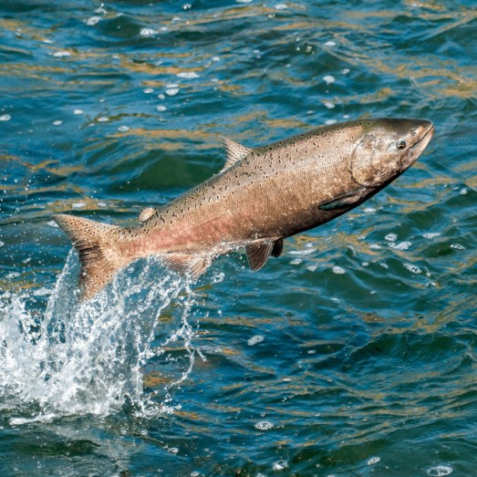
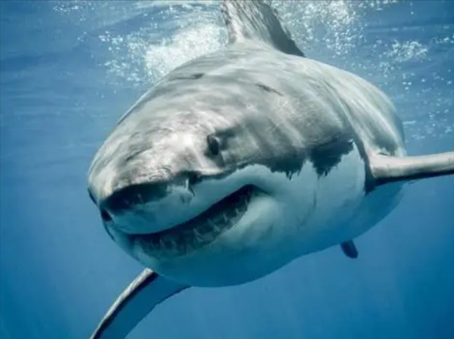
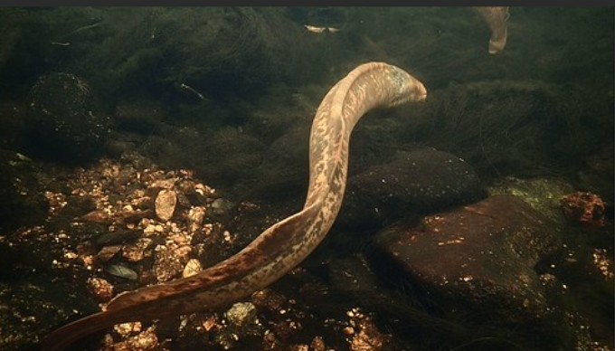
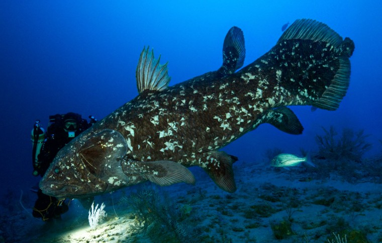
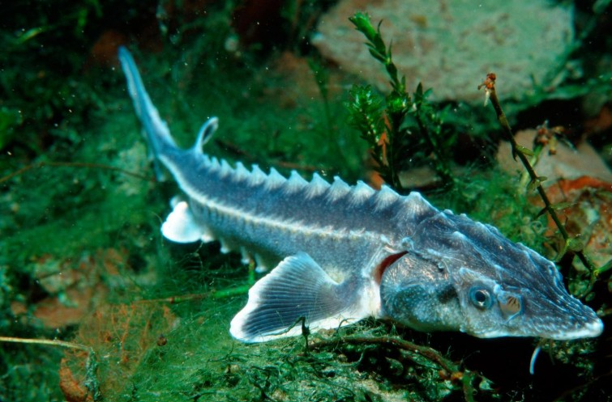
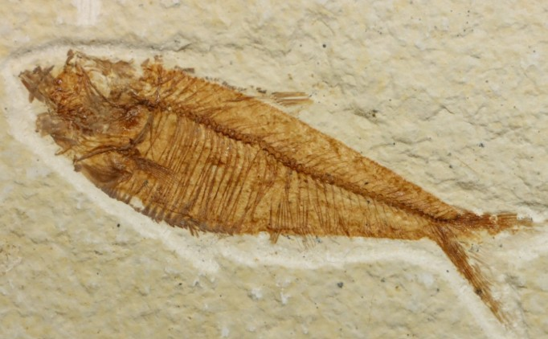

Les poissons emblématiques de l'aquarium
❖ Poissons osseux (Ostéichtyens) ❖
Exemple de poissons :
- Saumon
- Thon
- Morue
- Sardine
- Perche
- Bar / Loup de mer
- Dorade
- Anguille
- Poisson-clown
- Poisson-papillon

❖ Poissons cartilagineux (Chondrichtyens) ❖
Exemple de poissons :
- Requin blanc
- Requin marteau
- Requin tigre
- Raie manta
- Raie pastenague
- Requin mako
- Requin-baleine
- Chimère
- Torpille (raie électrique)
- Requin dormeur

❖ Poissons sans mâchoires (Agnathes) ❖
Exemple de poissons :
- Lamproie marine
- Lamproie fluviatile
- Lamproie de rivière
- Lamproie du Pacifique
- Lamproie de l'Arctique
- Myxine de l'Atlantique
- Myxine du Pacifique
- Myxine barbue
- Myxine géante
- Myxine du Sud

❖ Poissons à nageoires charnues (Sarcoptérygiens) ❖
Exemple de poissons :
- Coelacanthe
- Dipneuste africain
- Dipneuste australien
- Dipneuste sud-américain

❖ Poissons à nageoires rayonnées (Actinoptérygiens) ❖
Exemple de poissons :
- Brochet
- Silure
- Espadon
- Hippocampe
- Poisson-lion
- Poisson-perroquet
- Esturgeon
- Poisson-archer
- Poisson-lune
- Gobie

❖ Poissons fossiles / groupes éteints ❖
Exemple de poissons :
- Placodermes (comme Dunkleosteus)
- Ostracodermes
- Acanthodiens
- Céphalaspides
